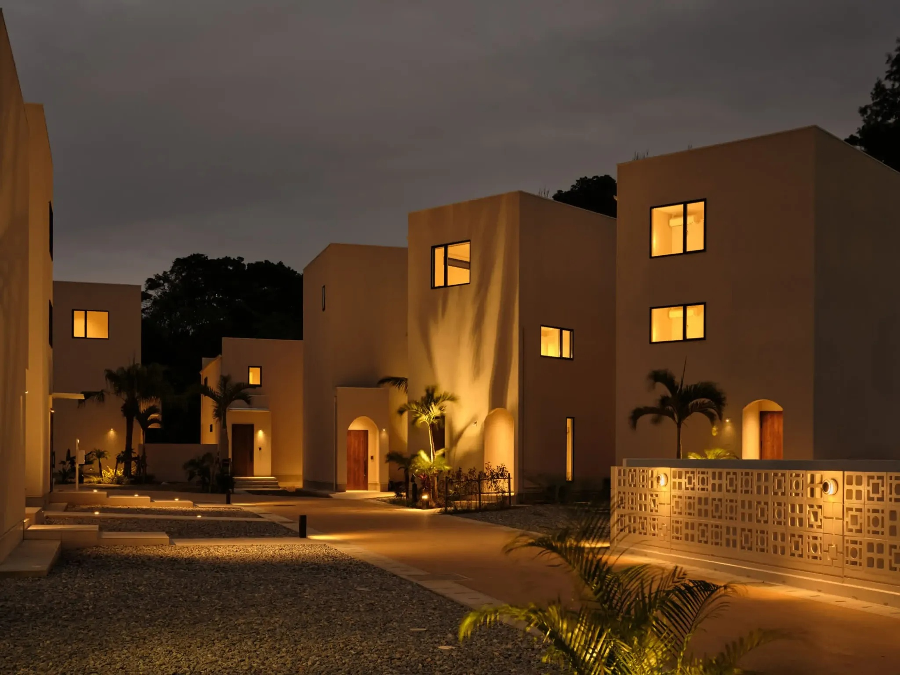

OKINAWA TRIP

URUUMI ONNA POOL VILLA
Stay 6/3 – 6/6 • Onna Okinawa
Official Website
Day 1 | 06/03
那霸機場 → 國際通 → Costco → 回機場接人 → 恩納 Villa
📍 景點
Naha Airport
Map
Kokusai Dori
Map
Costco Naha
Map
🍽 午餐
JACK'S STEAK HOUSE
Map
通堂拉麵
Map
88牛排
Map
Day 2 | 06/04
恩納 → 美麗海水族館 → 古宇利島 → 回恩納
📍 景點
Churaumi Aquarium
Map
Kouri Bridge
Map
🍽 午餐
Kouri Shrimp
Map
Shrimp Wagon Yoshi
Map
Day 3 | 06/05
萬座毛 → 青之洞窟 → 恩納
📍 景點
Manzamo
Map
Blue Cave
Map
Day 4 | 06/06
恩納 → 美國村
📍 景點
American Village
Map